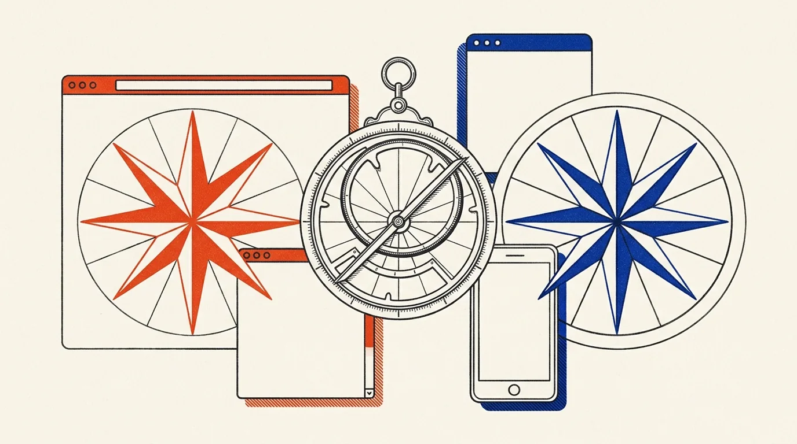
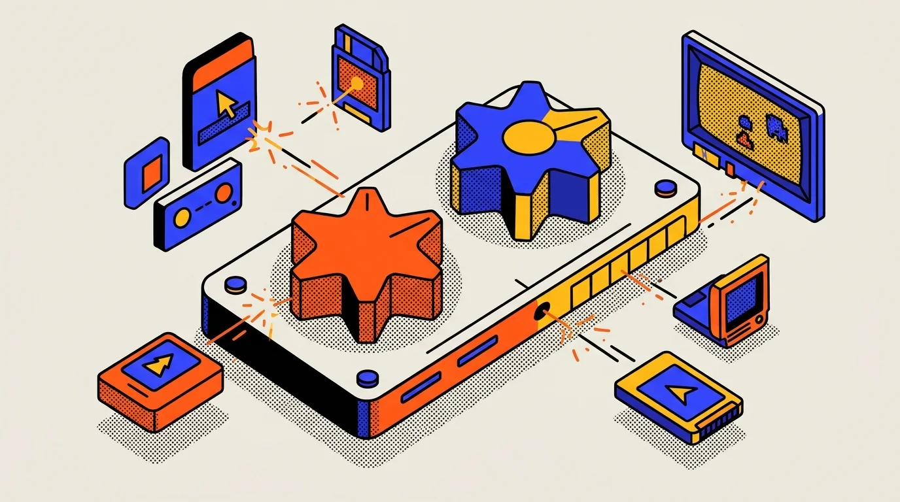
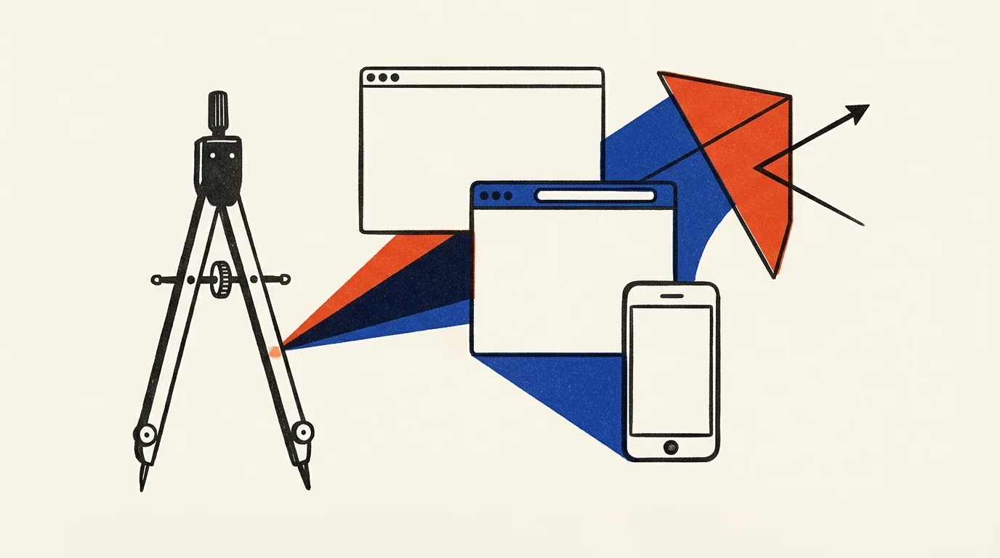
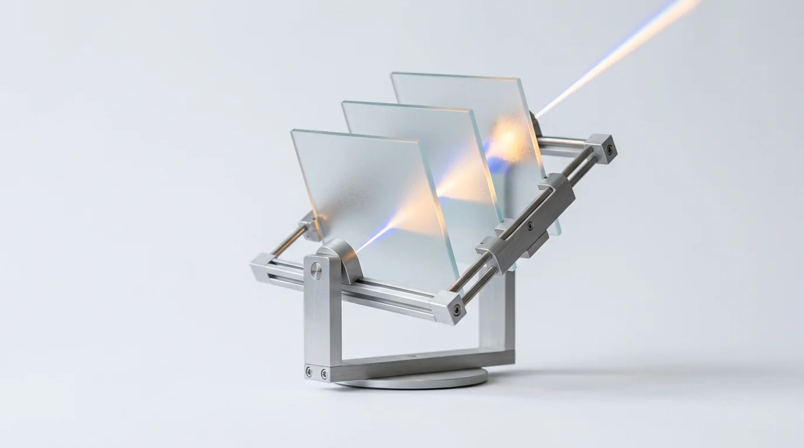

Not Three Themes. Two Non-Identical Twins.
Production App.jsx remains untouched. Explore the flagship Look D: Fraternal Twin Engine (α Castor ⇄ β Pollux) alongside the three individual building-block studies below.
One Twin Reads the Signal. The Other Plays the Spark.
Embraces the true astronomical & Mercurial duality of Gemini: α Castor leads with warm cotton-paper journalism & plain-English dossiers (Look A + B’s airy calm), while β Pollux flips via View Transitions into hands-on demos, Showcase originals & Add-On cartridges (Look C).



Editorial Magazine & Daylight Authority
Pure archival broadsheet study: warm cotton paper, Newsreader serif, and two-tone Risograph illustrations.

Cinematic Gallery & Spatial Minimalism
Refined 5:7 split spotlight showing the full Dieter Rams frosted glass sculpture above the fold + 1-click Reader Lens.
Guerrilla Cultural Hub & Kinetic Studio
Pure kinetic field study: industrial putty, bold ink poster frames, halftone vector art, and 3-second simulator.